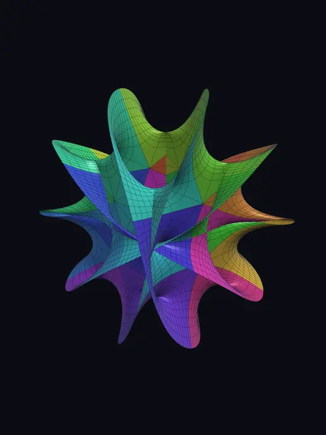

当前设备无法运行 3D 渲染，已显示静态预览。
☰ 参数
卡拉比–丘流形投影
z₁⁵ + z₂⁵ = 1
费马超曲面在 ℂ² 中的实二维切片，按 Hanson 方法由 n₁·n₂ 个补丁拼成，经 4D 旋转后投影到 3D。
流形
预设
五次 (n=5, 经典弦论)
四次 (K3 切片)
三次 (环面)
二次
混合 (3, 5)
六次
自定义
指数 n₁
指数 n₂
延展 a
分辨率
显示补丁
4D → 3D 投影
投影角 α
z₁ 相位 φ₁
z₂ 相位 φ₂
补丁分离
外观
着色
按补丁 (k₁, k₂)
隐藏第四维坐标
z₁ 的辐角
参数网格棋盘
曲面
网格线
动画
自动旋转
α 扫描
相位流动
速度
重置视角
保存到相册
一键发布笔记 (3:4 图)
拖动旋转 · 双指缩放 · 双击重置
关闭